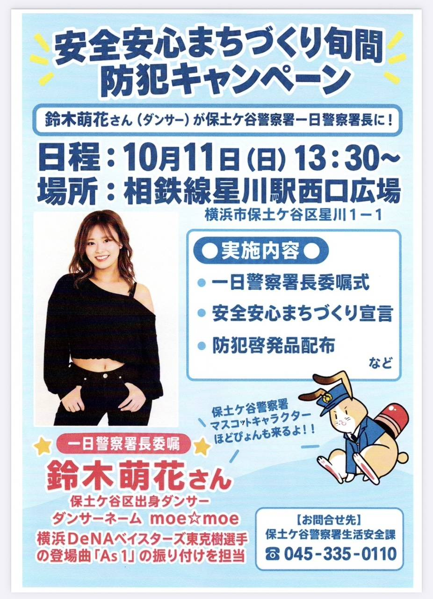

10/11（日）13:30～
安全安心まちづくり旬間
安全安心まちづくり旬間
防犯キャンペーン
鈴木萌花さんが保土ケ谷警察署の一日警察署長を務め、防犯意識を高めるキャンペーンが行われます。保土ケ谷警察署のマスコットキャラクター「ほどぴょん」も登場予定です。
実施内容
- 一日警察署長委嘱式
- 安全安心まちづくり宣言
- 防犯啓発品の配布 など
10月11日から20日は、神奈川県の「安全・安心まちづくり旬間」です。地域の防犯について考えるきっかけとして、ぜひ会場へお立ち寄りください。
